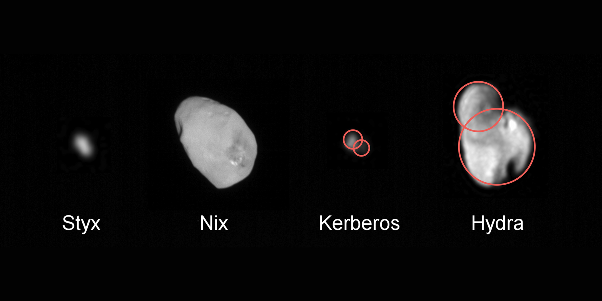

Általános InfromációkA Plútó egy törpebolgyó A Plútó 2006. augusztus 24-éig a Naprendszer kilencedik bolygója volt, majd utána a második legnagyobb törpebolgyója. |

|
Jellemzői
A Plútó tömege csak ötöd annyi mint a Holdénak, valamint az átmérője is kisebb. Felszínét fagyott nitrogén fedi, amely a napközel hatására felenged és vékony légkört képez.
Felszíne geológiailag aktív, gleccserek és jégvulkánok is találhatók rajta. Hegységek és síkságok tarkítják. Valamely területein més dűnék is megfigyelhetőek, amiket fagyott homokszem méretű metándarabok alkotnak.
A Plútót először Clyde Tombaugh azonosította 1930. február 18-án, ezután gyorsan kikiáltották a Naprendszer kilencedik bolygójának. Ezt a címét sokáig őrizte, de szakmai körökben egyre többen kezdték a törpebolygók közé sorolni.
Kísérői
CharonEz a hold a Plútó legnagyobb kísérője, átmérője 1207 km, ezért a Plútóhoz hasonlítva jelentős méretű. Emiatt a 2:1 nagyságarány miatt a Plútó-Charon-rendszert korábban kettős bolygónak hívták. |

|
Nix, Hydra, Kerberos és Styx2005-ig a Plútó egyetlen ismert holdja a Charon volt, de a Hubble távcső kamerája két apró holdat is talált aminek a Nix és Hydra nevet adták. 2011-ben ugyancsak a Hubble észrevett egy újabb égitestet a Plútó közelében. 2012-ben egy újabb holdat vettek észre. Ezeket a holdakat Kerberosnak és Styxnek nevezték el. |
 |